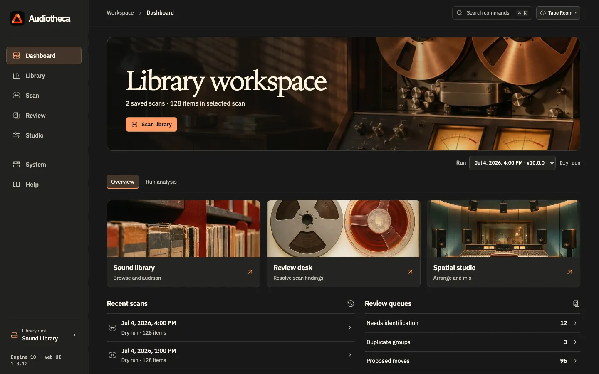

Identify vendors and products
Filenames, PE headers, NFO and readme text, archive listings and an optional AI lookup for stubborn unknowns, each with a confidence tier.
v1.0.12 · Engine 10 · now in Unraid Community Apps
Audiotheca walks your VST, sample and installer folders, works out who made what, peeks inside archives without extracting them, finds true duplicates and plans a clean vendor layout. You see every move before anything touches a disk.

Interactive demo
This is a toy library of ten items, the kind of pile that builds up over years of downloads. Press run and watch Audiotheca's phases work through it. Everything here happens in your browser.
/library/_software/_audio
Run the scan to see proposed moves, duplicate groups and anything that needs a human.
What it does
Often on slow network shares, often thousands of items deep. Audiotheca was designed for exactly that.
Filenames, PE headers, NFO and readme text, archive listings and an optional AI lookup for stubborn unknowns, each with a confidence tier.
List .rar, .7z, .iso and .zip contents without extracting. Handles scene-hash folders, multipart sets and archive-plus-extracted pairs.
Not naive name matching. Groups by product identity and hash, tells version upgrades apart from true copies, and lets you pick the keeper.
Preview every proposed move into vendor folders, approve by section or by item, and execute only what you signed off.
Waveforms with LUFS, BPM and key badges in the library explorer, plus a spatial studio to arrange clips in a 3D room and export a stereo WAV.
Malware heuristics, ClamAV deep scan, quarantine and shred, SHA-256 lookups, plus hardlink and bloat plans to win back disk space.
Product tour
Real screenshots from the 1.0.12 web UI, captured against a disposable demo library. Click any image to enlarge it.
Walkthroughs
Twelve short captures, straight from the documentation. Pick one from the list.
Audio preview
In the library explorer, select a WAV, MP3 or FLAC and the inspector draws its waveform, measures loudness and estimates tempo and key. The preview session lets you change tempo and pitch to audition a loop against your project. This little player is synthesized live in your browser to show the idea.
/library/Samples/AcmeAudio/Loops/
Theme studio
Each built-in theme comes with its own illustrated room. Pick one below and this page switches to the same palette the app uses.
Install
One container for a NAS, a portable build for Windows, or the source for tinkerers.
Audiotheca./mnt/user/audio. It mounts read-only at /library by default.openssl rand -hex 32.Template source: cephyrixzyth/unraid-templates. Keep appdata on cache or SSD storage.
Secrets are generated in your browser with crypto.getRandomValues and never leave this page. Image: ghcr.io/cephyrixzyth/audiotheca (all-in-one API and web UI).
Audiotheca-Portable-1.0.12-win64.zip from the latest release.Run Audiotheca.bat..rar, .7z and .iso.Desktop builds use Tauri. Check the release page for an asset that matches your system.
git clone https://github.com/cephyrixzyth/Audiotheca
cd Audiotheca
python -m venv .venv
.\.venv\Scripts\Activate.ps1
pip install -r requirements.txt
$env:AUDIOTHECA_LIBRARY_ROOT = "D:\YourLibrary\_software\_audio"
.\start-ui.ps1 # API on 8787, UI on http://localhost:5173Needs Python 3.11+, Node.js 24+ for the browser UI, and 7-Zip for archive peek. Prefer the CLI? python main.py --dry-run writes reports to dedupe_reports/.
Safety first
Review the dry-run reports, then step through four stages. Live API calls need confirm_live: true on top of dry_run: false.
_delete-canidates for you to review.FAQ
No. Suspected duplicates are moved to _delete-canidates at the root of your audio folder, and you delete them yourself. With dry run on, which is the default, nothing moves at all and you only get reports.
Yes. It was built for high-latency SMB and CIFS shares. Use a conservative worker count (4 to 8) and the default depth limits.
As a rough guide, about 7,200 items on a network share takes 45 to 120 minutes, depending on latency, cache hits and archive peeking. Second runs are faster once the scan cache is warm, and every phase shows an ETA.
For archive peek on .rar, .7z and .iso, yes. .zip works without it. The Docker image already includes what it needs.
Matching is deliberately strict. Audiotheca separates version upgrades from same-version copies and only groups items it can tie to the same product, so you are not asked to choose between things that are not really duplicates.
From audio and theca, a case or storage container. It catalogues and shelves a large software library.
It only reads. You decide what moves.